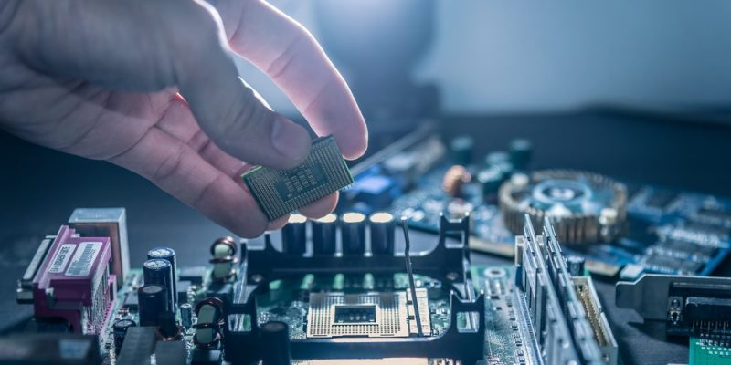
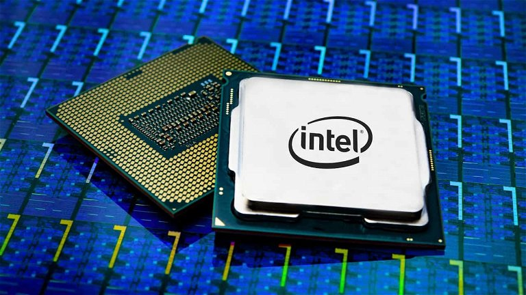
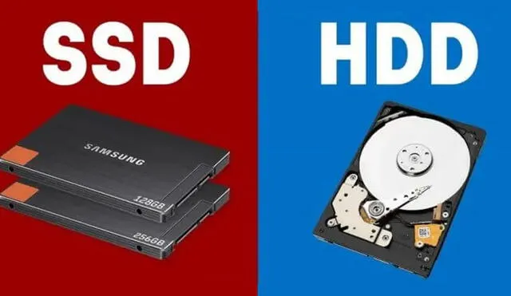
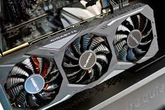
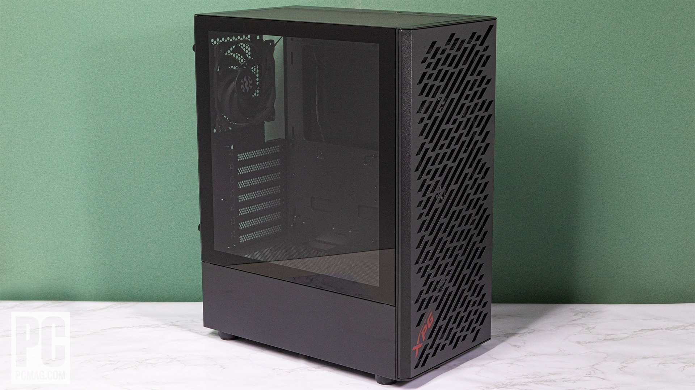
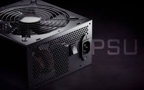

Componentes / Hardware
Placa madre
La placa base, también conocida como tarjeta madre, placa madre o placa principal, es una tarjeta de circuito impreso a la que se conectan los componentes que constituyen la computadora.
Procesador
Es el componente principal que procesa las señales y hace posible la computación. Actúa como el cerebro de cualquier dispositivo de computación. Obtiene instrucciones de la memoria, realiza las tareas necesarias y envía la salida a la memoria.
Memoria RAM
Es la memoria principal de un dispositivo, esa donde se almacenan de forma temporal los datos de los programas que estás utilizando en este momento.

Disco de almacenamiento
Las unidades de estado sólido (SSD) y las unidades de disco duro (HDD) son dispositivos de almacenamiento de datos. Las SSD almacenan datos en la memoria flash, mientras que las HDD almacenan datos en discos magnéticos.
Tarjeta gráfica
Transforma los datos que envía el procesador. El resultado es una información visible y comprensible que puede apreciar el usuario. La tarjeta de video cuenta con componentes diseñados para procesar imágenes de video.
Carcasa o Case
Extensión de espacio en la estructura de un monitor CRT o de una pantalla LCD, en la cual se alojan los diversos dispositivos funcionales del equipo de cómputo
Fuente de alimentación
Dispositivo que se utiliza para convertir la corriente de la red eléctrica en una forma de energía adecuada para los componentes de un dispositivo o sistema electrónico.
Preparativos Herramientas: Destornillador Phillips y pulsera antiestática. Componentes: Placa madre, procesador (CPU), memoria RAM, tarjeta gráfica (GPU), disco duro/SSD, ventiladores, fuente de alimentación (PSU) y case. Montaje Montar el Procesador: Levanta la palanca del socket del procesador en la placa madre. Coloca el procesador alineándolo correctamente. Baja la palanca del socket para asegurar el procesador. Instalar el Disipador/Enfriador del Procesador: Aplica pasta térmica si es necesario. Coloca y asegura el disipador sobre el procesador. Instalar la Memoria RAM: Alinea la RAM con las ranuras. Inserta la RAM firmemente hasta que las pestañas hagan clic. Montar la Placa Madre en el Case: Coloca los separadores en el case. Alinea y atornilla la placa madre en su lugar. Instalar la Fuente de Alimentación (PSU): Coloca la PSU en su compartimiento y asegúrala con tornillos. Conectar los Cables de la Fuente de Alimentación: Conecta el cable de 24 pines a la placa madre. Conecta el cable de 8 pines al CPU. Conecta los cables de alimentación a la GPU y discos. Instalar la Tarjeta Gráfica (GPU): Quita las tapas de los slots PCI. Inserta y asegura la GPU en el slot PCIe. Instalar el Almacenamiento (HDD/SSD): Coloca el HDD/SSD en su bahía y asegúralo. Conecta el cable de datos SATA y el cable de alimentación SATA. Instalar Ventiladores: Coloca los ventiladores en sus ubicaciones y conéctalos a la placa madre. Conectar Cables del Case: Conecta los cables del panel frontal del case a la placa madre (USB, audio, botones, LEDs). Verificar Conexiones y Organizar Cables: Revisa todas las conexiones. Organiza los cables con bridas o velcro. Encender y Configurar Encendido: Conecta el cable de alimentación y enciende el ordenador. BIOS/UEFI: Entra en la BIOS/UEFI para verificar los componentes y configurar opciones iniciales. Instalar Sistema Operativo: Inserta el medio de instalación del sistema operativo y sigue las instrucciones para instalarlo. Esto cubre los pasos esenciales para ensamblar tu ordenador de manera más concisa.
Es el conjunto de los programas de cómputo, procedimientos, reglas, documentación y datos asociados, que forman parte de las operaciones de un sistema de computación.
Gestión de Procesos: Controla la ejecución de aplicaciones. Gestión de Memoria: Asigna y supervisa el uso de la RAM. Gestión de Archivos: Maneja la creación y organización de archivos. Gestión de Dispositivos: Controla la interacción con el hardware. Interfaz de Usuario: Proporciona una forma de interactuar con el sistema, ya sea mediante GUI o CLI. Tipos de Sistemas Operativos Windows: Popular en PCs, desarrollado por Microsoft. macOS: Utilizado en computadoras Apple. Linux: Sistema operativo de código abierto usado en servidores y PCs.
Estos sistemas operativos facilitan la interacción con el hardware y el software de una computadora, proporcionando una plataforma estable y eficiente para ejecutar aplicaciones.
Controladores (Drivers) Drivers de Video: Para asegurar la correcta visualización y resolución de la pantalla. Drivers de Audio: Para el funcionamiento de los altavoces y micrófonos. Drivers de Red: Para conectar a Internet o redes locales. Drivers de Impresoras y Otros Periféricos: Para el uso de impresoras, escáneres y otros dispositivos externos. Herramientas de Seguridad Antivirus/Antimalware: Para proteger el sistema contra virus y malware. Firewall: Aunque muchos sistemas operativos ya incluyen un firewall, a veces se puede optar por uno de terceros. Aplicaciones de Productividad Suite Ofimática: Microsoft Office, LibreOffice, Google Docs (acceso web). Correo Electrónico: Microsoft Outlook, Mozilla Thunderbird o clientes de correo basados en web como Gmail. Navegadores Web Navegadores: Google Chrome, Mozilla Firefox, Microsoft Edge, Safari (en macOS). Software de Comunicación Clientes de Mensajería: Microsoft Teams, Slack, Zoom, Skype. Reproductores Multimedia Reproductores de Video y Audio: VLC Media Player, Windows Media Player, iTunes (en macOS). Herramientas de Compresión Programas de Compresión: WinRAR, 7-Zip, WinZip. Utilidades del Sistema Software de Respaldo: Herramientas para hacer copias de seguridad, como Acronis True Image, Windows Backup. Software de Limpieza y Mantenimiento: CCleaner, herramientas de limpieza integradas en el sistema operativo. Software de Desarrollo (opcional) Editores de Texto y IDEs: Visual Studio Code, Notepad++, IntelliJ IDEA. Control de Versiones: Git, GitHub Desktop. Actualizaciones Actualizaciones del Sistema: Asegúrate de que el sistema operativo esté actualizado con los últimos parches de seguridad y mejoras. Instalar estos tipos de software proporcionará una base sólida para trabajar con tu nuevo sistema operativo, mejorando tanto la funcionalidad como la seguridad del sistema.
Monitor: La pantalla donde se muestran las imágenes y la información procesada por la computadora. Teclado: Dispositivo de entrada para escribir texto y comandos. Mouse: Dispositivo de entrada para apuntar, hacer clic y navegar por la interfaz gráfica. Altavoces/Auriculares: Para salida de audio. Impresora/Escáner: Para imprimir documentos y digitalizar imágenes o texto. Periféricos Adicionales Cámara Web: Para videoconferencias y capturar imágenes o videos. Micrófono: Para grabar audio o usar en videoconferencias. Dispositivos de Almacenamiento Externo: Unidades flash USB, discos duros externos para almacenamiento adicional o respaldo. Adaptadores de Red: Tarjetas o adaptadores Wi-Fi para conexión inalámbrica. Dispositivos de Entrada Especializados Tabletas Gráficas: Para diseño gráfico y dibujo digital. Joysticks/Controladores de Juego: Para videojuegos. Lectores de Tarjetas SD: Para transferir datos desde tarjetas de memoria. Otros Componentes y Accesorios Bases de Enfriamiento: Para ayudar a mantener la computadora portátil fría. UPS (Sistema de Alimentación Ininterrumpida): Para proteger la computadora contra cortes de energía.
Dudas y/o Sugerencias